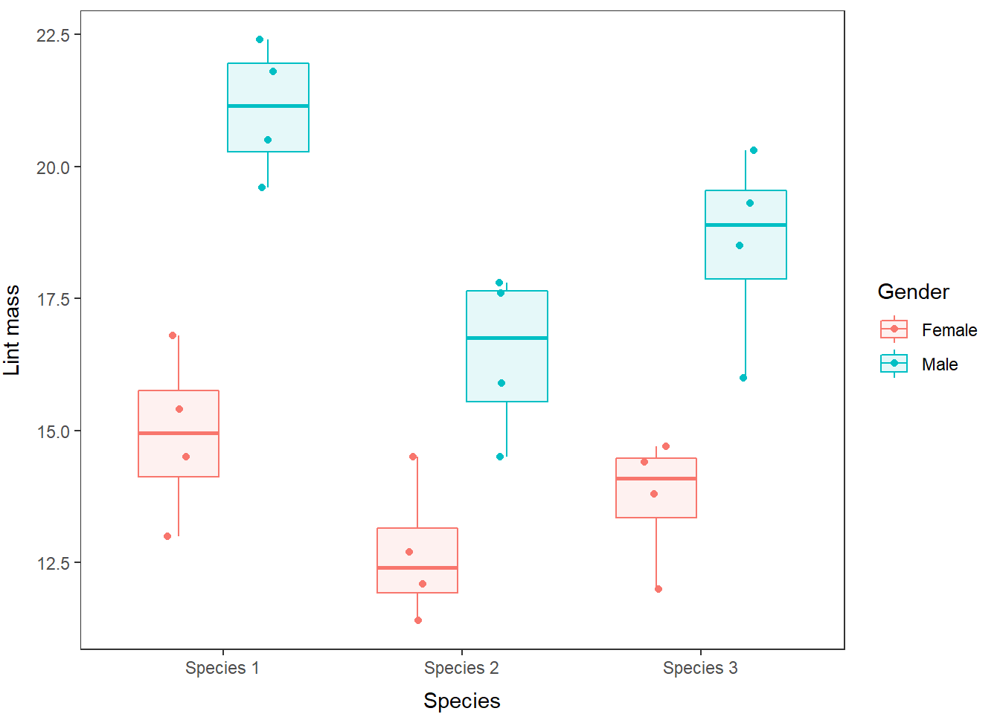
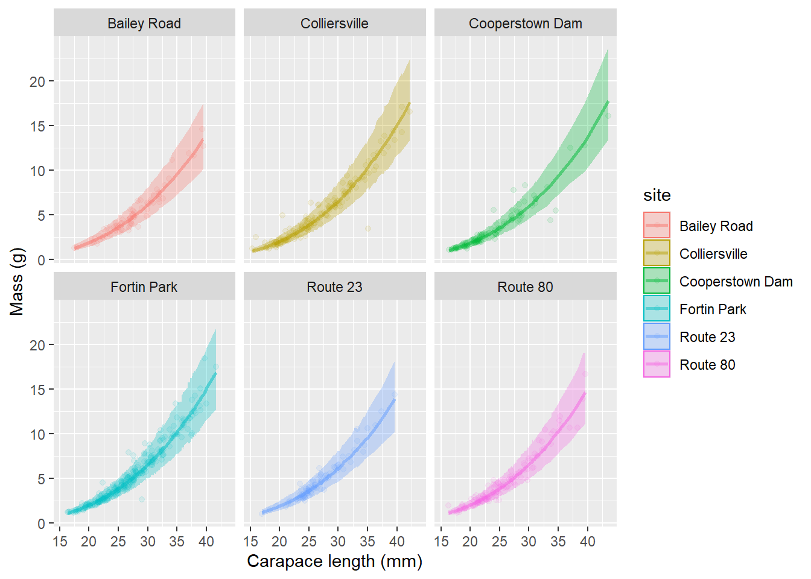

9.6 Homogeneity of variances
This assumption states that the residual error within groups is about equal (still normal, with a mean of zero). This is fairly straightforward, but how do we assess this?
9.6.1 Data exploration
9.6.2 Kolmogrov-Smirnov test(sss)
One option for assessing the validity of this assumption is to use the Kolmogrov-Smirnov test to determine whether the data from different groups come from the same distribution. The null hypothesis for this test is that the two distributions do not differ.
## Warning in ks.test(turtles$Stay[turtles$Year == 2013], turtles$Stay[turtles$Year
## == : p-value will be approximate in the presence of ties##
## Two-sample Kolmogorov-Smirnov test
##
## data: turtles$Stay[turtles$Year == 2013] and turtles$Stay[turtles$Year == 2014]
## D = 0.21955, p-value = 6.618e-05
## alternative hypothesis: two-sided## Warning in ks.test(turtles$Stay[turtles$Year == 2013], turtles$Stay[turtles$Year
## == : p-value will be approximate in the presence of ties##
## Two-sample Kolmogorov-Smirnov test
##
## data: turtles$Stay[turtles$Year == 2013] and turtles$Stay[turtles$Year == 2015]
## D = 0.13576, p-value = 0.08503
## alternative hypothesis: two-sided## Warning in ks.test(turtles$Stay[turtles$Year == 2014], turtles$Stay[turtles$Year
## == : p-value will be approximate in the presence of ties##
## Two-sample Kolmogorov-Smirnov test
##
## data: turtles$Stay[turtles$Year == 2014] and turtles$Stay[turtles$Year == 2015]
## D = 0.35531, p-value = 7.072e-11
## alternative hypothesis: two-sidedBUT: this only works for grouping variables, and it only compares two groups at a time, so this could be very cumbersome if we have more than a couple of groups. And, since we are using R to make our lives easier, we do not want cumbersome if we can help it. This test also is supposed to be reserved for continuous distributions, but we’ll keep ignoring the fact that we are working with a discrete variable for now.
As with assumption #2 above, we have two ways (the same two) to visualize this information.
First, we can use our boxplots again to look at variability within groups to visually assess whether or not the variance differs from one group to the next:

We can see that the variance is very clearly different between groups. A log transformation will fix that…
# Plot the log-transformed data
par(mfrow=c(1,1))
boxplot(log(Stay)~Year, data=turtles, notch=TRUE, col='gray')
9.6.3 Residual diagnostics
Again, this is the preferred method for assessing normality in the residuals (notice the key word here?).
We can look at how residual error changes (or doesn’t) across group factors such as Year.

Now we are interested in the two plots on the left side of this multipanel plot.
In the top left: we can see pretty clearly that there is a distinct trend in the residual error between groups. The group on the far right is much more variable than the others!
In the bottom left, we essentially see the same thing. Our standardized residuals show us that the variances are clearly not equal.
Looking at a log transformation demonstrates that these problems are pretty well solved by transformation, at least enough that a linear model should be robust to the differences between groups.

We are looking for slightly different patterns with continuous explanatory variables.

In the top left, we want to see two things:
1. Most of our data should be contained on the interval (-3,3), so it looks like we are good to go here.
2. If the residuals are normally distributed, we should see what looks like random scatter in the plots.
In the bottom left, we want to see:
1. Most of our data should be less than 3 (this is the square root of standardized residual so they are all positive)
2. We should see random scatter in these as well.